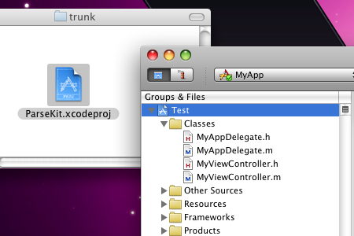
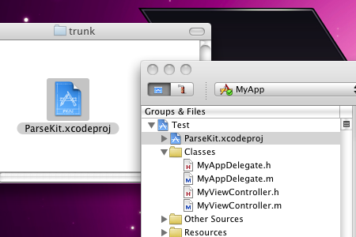
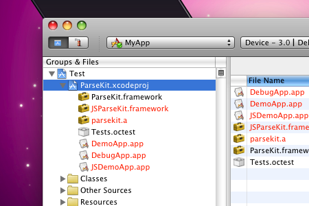
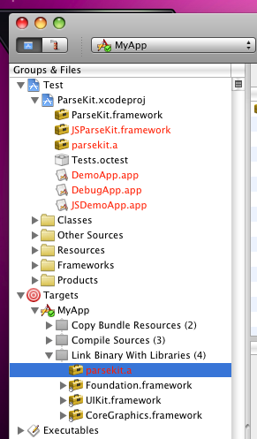
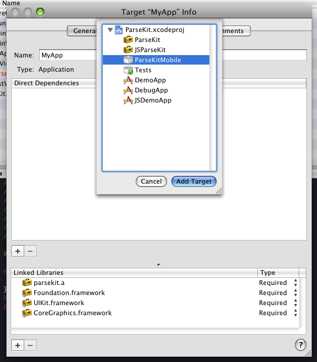
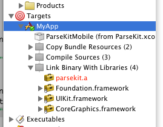
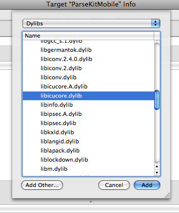
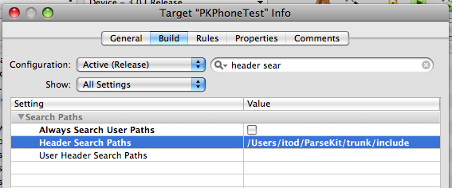
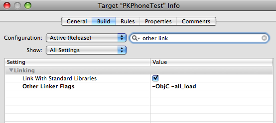

ParseKit for iPhone OS Applications
Including ParseKit in your iPhone OS applications is easy. Follow the steps below.
-
Check out the ParseKit sourcecode from Google Code. The latest tagged (stable) version is recommended.
svn co http://todparsekit.googlecode.com/svn/tags/release-1.5-tag
-
Open your iPhone app Xcode project. Drag the ParseKit.xcodeproj file from the finder and drop it at the top of the Groups & Files tree in your app's Xcode project window. In the confirmation dialog that appears, click Add.


-
Click and expand the disclosure triangle next to the blue ParseKit.xcodeproj icon to reveal all of the potential products of the ParseKit project.

-
Click and expand the disclosure triangle next to your app's Target. Drag the parsekit.a product under ParseKit.xcodeproj to your Target's Link Binary With Libraries build phase.

-
Double-click your Target (MyApp shown here) to edit it. In the General tab of the Target Info window, click the square + button below the Direct Dependencies list. In the sheet that appears, select ParseKitMobile and click Add Target.

You will now see the ParseKitMobile target appearing as a dependency under your app's Target.
-
Next click the + button below the Linked Libraries list in the same window. Select libicucore.dylib and click Add. (This is for regular expression features in the PKPattern class.)

-
Under the Build tab of your app's Target Info window, edit the Header Search Paths Setting to include the path to the include folder inside of the ParseKit folder you checked out. Make sure you edit this for All Configurations, not just the active one.

-
Finally, in the same window, edit the Other Linker Flags Setting to include the following flags: -ObjC -all_load. (This is needed for code in Objective-C categories in the ParseKit static library to execute successfully.)

- Ship it!